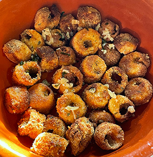
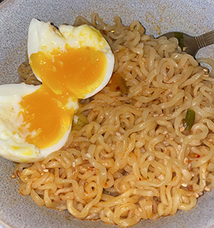

In a large bowl, add the flour, garlic powder, salt, pepper, and milk, and stir until well-combined.
Cut the head of cauliflower into small florets. Add the pieces to the batter, confirming each piece is evenly coated. Place the coated cauliflower in the Air fryer or oven. Baking for 30 minutes, flipping halfway.
While the cauliflower is cooking, in a separate bowl, combine the buffalo sauce and honey. Once combined, remove your florets from baking and brush the buffalo sauce mixture on the cauliflower.
Return to oven or Air fryer and allow to cook all the way the through.
Serve, and enjoy!
Heart of Palm Calamari
Yield: 4 Servings

Calamari made with Heart of Palm, served with a Garlic & Parsley sauce. Photo by: Alexandra Rivero
Ingredients
1 can heart of palm, drained
1/2 cup of flour
1 cup of Panko breadcrumbs
2 eggs
1 tsp of garlic powder
1 tsp of onion powder
1/2 tsp of salt
1/2 tsp of pepper
1 lemon
1/4 cup of melted butter
2 tsp of minced galic
1 handful of parsley
Directions
Drain and chop the pieces of heart of palm into quater pieces. Pat dry
Combine in a medium bowl flour, salt, pepper, onion powder, and garlic powder. In a small dish, mix your 2 eggs with a bit of seasoning. Toss your pieces of "calamari" into the flour mixture, egg mixture, then into the breadcrumbs.
Once fully coated, place the calamari pieces into the Airfryer, oven, or frying pan. Allow to cook for 15 minutes at 350°
While the calamari is cooking, begin making the sauce. Combine a squeeze of lemon, minced garlic, parsley, and melted butter in a small bowl.
After 15 minutes of cooking, remove the calamari from the heat. Pour your sauce over the pieces, serve, and enjoy!
Kimchi Ramen
Yield: 1 Serving

Kimchi Ramen served a Soft-Boiled egg. Photo by: Alexandra Rivero
Ingredients
1 pack of Shin ramen
1/2 cup of any kimchi
2 cups of water
1 tsp of minced garlic
1 tsp of cooking oil
1 tsp onion powder
1/2 tsp of salt
1/2 tsp of pepper
Directions
In a small sized pot, heat the oil at medium heat, and add the kimchi once the oil is lightly smoking. Cook until the kimchi appears to be lighter in color.
Add the minced garlic, salt, pepper, onion powder, and Shin seasoning pack to the pot. Once fuly combined, add the water.
Bring the pot back to boil, then add your uncooked noodles. Let the noodles cook for 4-5 minutes.
Once the noodles are fully cooked, add the ramen into a bowl, and garnish with choice of toppings.